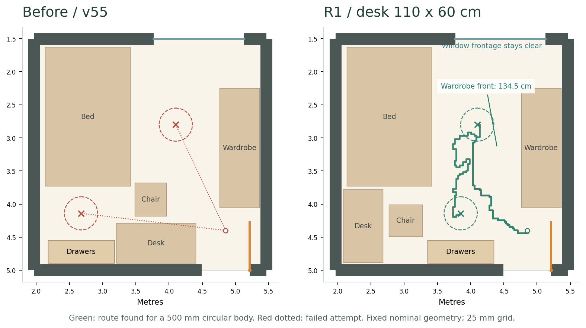
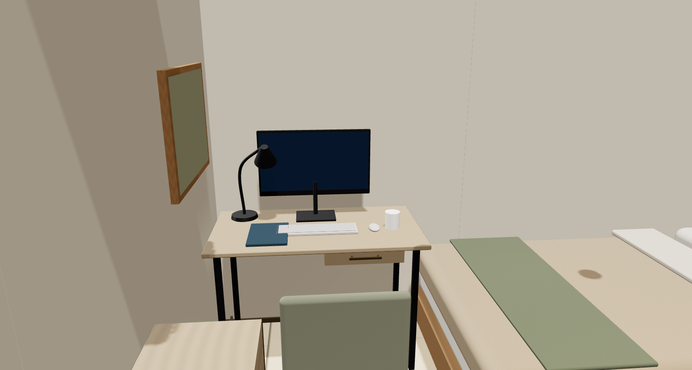
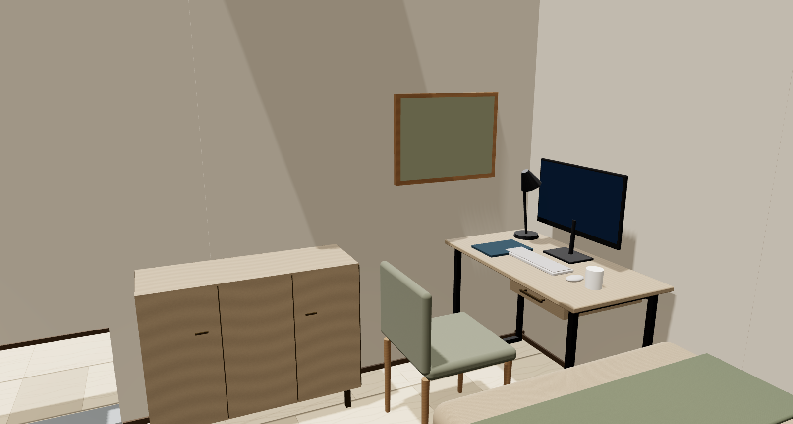
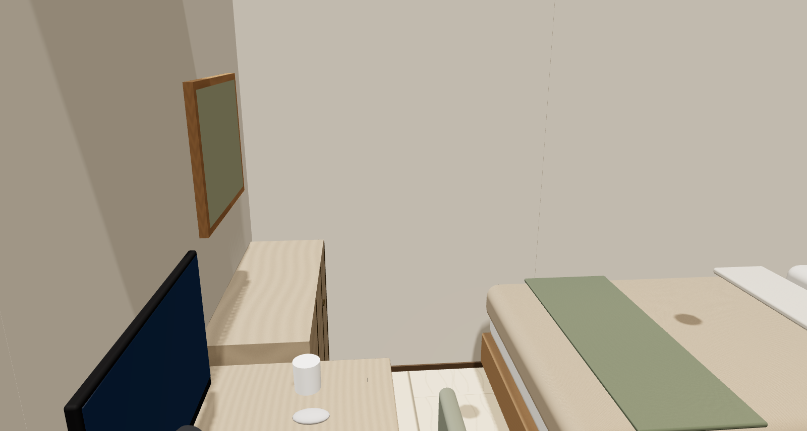
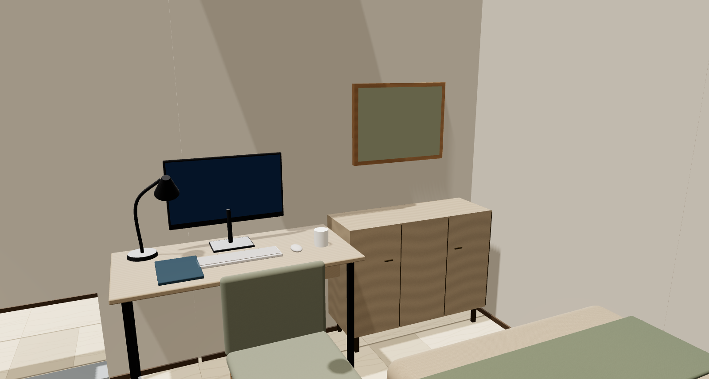

مراجعة غرفة النوم الأولى · تجربة محلية
المكتب أسفل السرير، والشباك خالي
ننقل المكتب للحائط الغربي، ووحدة التخزين للحائط الجنوبي. مقاس المكتب المقترح 110×60 سم؛ أصغر من الحالي بـ10 سم. السرير والدولاب يفضلوا في أماكنهم.
134.5 سممساحة أمام الدولاب
81.5 سممساحة أمام التخزين والكرسي في وضعه
الشباك خاليعرض واجهة 135.6 سم
قبل وبعد على نفس المقياس

الأخضر مسار ظهر في فحص دائرة قطرها 50 سم؛ الأحمر محاولة لم تنجح. الفحص داخل الغرفة، والأثاث مقفول. ده نموذج مبسط للحركة، مش قياس راحة.
المقارنة من داخل الغرفة

من ناحية المدخل
من ناحية الشباك
من ناحية المدخل
من ناحية الشباكنفس نقطتي الكاميرا والعدسة في الحالتين. صور من النموذج الهندسي الفعلي؛ الأثاث تمثيل عام.
إيه اللي اتحسن وإيه لسه محتاج حسم؟
الوصول للسرير والدولاب ووحدة التخزين والشباك نجح في الفحص على دقتين مختلفتين. المسارات فضلت موجودة مع سحب الكرسي 20 سم ومع مساحة مفترضة لشخص جالس. فتح الباب لم يتداخل مع الأثاث في فحص حركة الضلفة المفترضة.
فتح وحدة التخزين هو شرط الاختيار المتبقي. في تجربة متحفظة، حجزنا عرض الوحدة بالكامل مع امتداد مفتوح 30 سم؛ المسار اتقفل. لازم نحدد شكل الضلف أو الأدراج ومقاس فتحها الحقيقي قبل اعتماد التوزيع. نجاح الحركة وهي مقفولة لا يحسم التشغيل وهي مفتوحة.
اختيار مكتب 110 سم يسيب حوالي 2.9 سم عند الحائط و5 سم عند السرير. بديل 115 سم نجح في المسارات الأساسية لكنه يسيب 4 مم فقط عند الحائط، لذلك فضّلنا 110 سم في المقارنة.
النسخة التجريبية
جاهزة كتجربة مستقلة للمراجعة. اختبار الحركة سجل 12 نتيجة ناجحة للمسارات الأساسية و24 نتيجة ناجحة لحالات الباب والكرسي. المقاسات الفعلية لوحدة التخزين والكرسي هتحسم التشغيل النهائي.
نتائج ومصدر المقارنة
الفحص الثابت: 186 ناجح / 75 تحذير / صفر أخطاء قاطعة. عدد التحذيرات لم يتغير. الهندسة المعمارية وباقي الغرف محفوظة.
Source: scene-9cf45a73 / saved v55 scene-4821689
Candidate: scene-32a80894 / local storage revision null
تحميل نتائج الفحص